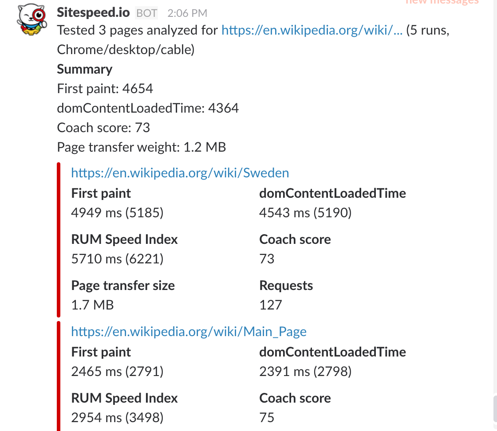

Documentation / Configuration
Configuration
Configuration
Sitespeed.io is highly configurable, let’s check it out!
The options #
You have the following options when running sitespeed.io within docker (run docker run sitespeedio/sitespeed.io:38.6.0 --help to get the list on your command line):
sitespeed.js [options] <url>/<file>
Browser
-b, --browsertime.browser, --browser Choose which Browser to use when you test. Safari only works on Mac OS X and iOS 13 (or later). [choices: "chrome", "firefox", "safari", "edge"] [default: "chrome"]
-n, --browsertime.iterations How many times you want to test each page [default: 3]
--browsertime.spa, --spa Convenient parameter to use if you test a SPA application: will automatically wait for X seconds after last network activity and use hash in file names. Read https://www.sitespeed.io/documentation/sitespeed.io/spa/ [boolean] [default: false]
--browsertime.debug, --debug Run Browsertime in debug mode. Use commands.breakpoint(name) to set breakpoints in your script. Debug mode works for Firefox/Chrome/Edge on desktop. [boolean] [default: false]
--browsertime.limitedRunData Send only limited metrics from one run to the datasource. [boolean] [default: true]
-c, --browsertime.connectivity.profile The connectivity profile. To actually set the connectivity you can choose between Docker networks or Throttle, read https://www.sitespeed.io/documentation/sitespeed.io/connectivity/ [string] [choices: "4g", "3g", "3gfast", "3gslow", "3gem", "2g", "cable", "native", "custom"] [default: "native"]
--browsertime.connectivity.alias Give your connectivity profile a custom name [string]
--browsertime.connectivity.down, --downstreamKbps, --browsertime.connectivity.downstreamKbps This option requires --connectivity be set to "custom".
--browsertime.connectivity.up, --upstreamKbps, --browsertime.connectivity.upstreamKbps This option requires --connectivity be set to "custom".
--browsertime.connectivity.rtt, --latency, --browsertime.connectivity.latency This option requires --connectivity be set to "custom".
--browsertime.connectivity.engine, --connectivity.engine The engine for connectivity. Throttle works on Mac and tc based Linux. For mobile you can use Humble if you have a Humble setup. Use external if you set the connectivity outside of Browsertime. More documentation at https://www.sitespeed.io/documentation/sitespeed.io/connectivity/. [string] [choices: "external", "throttle", "humble"] [default: "external"]
--browsertime.connectivity.humble.url, --connectivity.humble.url The path to your Humble instance. For example http://raspberrypi:3000 [string]
--browsertime.timeouts.pageCompleteCheck, --maxLoadTime The max load time to wait for a page to finish loading (in milliseconds). [number] [default: 120000]
--browsertime.pageCompleteCheck, --pageCompleteCheck Supply a JavaScript that decides when the browser is finished loading the page and can start to collect metrics. The JavaScript snippet is repeatedly queried to see if page has completed loading (indicated by the script returning true). Checkout https://www.sitespeed.io/documentation/sitespeed.io/browsers/#choose-when-to-end-your-test
--browsertime.pageCompleteWaitTime, --pageCompleteWaitTime How long time you want to wait for your pageCompleteCheck to finish, after it is signaled to closed. Extra parameter passed on to your pageCompleteCheck. [default: 5000]
--browsertime.pageCompleteCheckInactivity, --pageCompleteCheckInactivity Alternative way to choose when to end your test. This will wait for 2 seconds of inactivity that happens after loadEventEnd. [boolean] [default: false]
--browsertime.pageCompleteCheckPollTimeout, --pageCompleteCheckPollTimeout The time in ms to wait for running the page complete check the next time. [number] [default: 1500]
--browsertime.pageCompleteCheckStartWait, --pageCompleteCheckStartWait The time in ms to wait for running the page complete check for the first time. Use this when you have a pageLoadStrategy set to none [number] [default: 500]
--browsertime.pageCompleteCheckNetworkIdle, --pageCompleteCheckNetworkIdle Use the network log instead of running JavaScript to decide when to end the test. This will wait for 5 seconds of no network activity before it ends the test. This can be used with Chrome/Edge and Firefox. [boolean] [default: false]
--browsertime.pageLoadStrategy, --pageLoadStrategy Set the strategy to waiting for document readiness after a navigation event. After the strategy is ready, your pageCompleteCheck will start running. This only work for Firefox and Chrome and please check which value each browser implements. [string] [choices: "eager", "none", "normal"] [default: "none"]
--browsertime.script, --script Add custom Javascript that collect metrics and run after the page has finished loading. Note that --script can be passed multiple times if you want to collect multiple metrics. The metrics will automatically be pushed to the summary/detailed summary and each individual page + sent to Graphite
--browsertime.injectJs, --injectJs Inject JavaScript into the current page at document_start. More info: https://developer.mozilla.org/docs/Mozilla/Add-ons/WebExtensions/API/contentScripts
--browsertime.selenium.url Configure the path to the Selenium server when fetching timings using browsers. If not configured the supplied NodeJS/Selenium version is used.
--browsertime.viewPort, --viewPort The browser view port size WidthxHeight like 400x300 [default: "1366x708"]
--browsertime.userAgent, --userAgent The full User Agent string, defaults to the User Agent used by the browsertime.browser option.
--browsertime.appendToUserAgent, --appendToUserAgent Append a String to the user agent. Works in Chrome/Edge and Firefox.
--browsertime.preURL, --preURL A URL that will be accessed first by the browser before the URL that you wanna analyse. Use it to fill the cache.
--browsertime.preScript, --preScript Selenium script(s) to run before you test your URL. They will run outside of the analyse phase. Note that --preScript can be passed multiple times.
--browsertime.postScript, --postScript Selenium script(s) to run after you test your URL. They will run outside of the analyse phase. Note that --postScript can be passed multiple times.
--browsertime.delay, --delay Delay between runs, in milliseconds. Use it if your web server needs to rest between runs :)
--browsertime.visualMetrics, --visualMetrics, --speedIndex Calculate Visual Metrics like SpeedIndex, First Visual Change and Last Visual Change. Requires FFMpeg and Python dependencies [boolean]
--browsertime.visualMetricsPerceptual, --visualMetricsPerceptual Collect Perceptual Speed Index when you run --visualMetrics. [boolean]
--browsertime.visualMetricsContentful, --visualMetricsContentful Collect Contentful Speed Index when you run --visualMetrics. [boolean]
--browsertime.visualElements, --visualElements Collect Visual Metrics from elements. Works only with --visualMetrics turned on. By default you will get visual metrics from the largest image within the view port and the largest h1. You can also configure to pickup your own defined elements with --scriptInput.visualElements [boolean]
--browsertime.scriptInput.visualElements, --scriptInput.visualElements Include specific elements in visual elements. Give the element a name and select it with document.body.querySelector. Use like this: --scriptInput.visualElements name:domSelector . If you want to measure multiple elements, use a configuration file with an array for the input. Visual Metrics will use these elements and calculate when they are visible and fully rendered.
--browsertime.scriptInput.longTask, --minLongTaskLength Set the minimum length of a task to be categorised as a CPU Long Task. It can never be smaller than 50. The value is in ms and you make Browsertime collect long tasks using --chrome.collectLongTasks or --cpu. [number] [default: 50]
--browsertime.video, --video Record a video and store the video. Set it to false to remove the video that is created by turning on visualMetrics. To remove fully turn off video recordings, make sure to set video and visualMetrics to false. Requires FFMpeg to be installed. [boolean]
--browsertime.videoParams.framerate, --videoParams.framerate, --fps Frames per second in the video [default: 30]
--browsertime.videoParams.crf, --videoParams.crf Constant rate factor for the end result video, see https://trac.ffmpeg.org/wiki/Encode/H.264#crf [default: 23]
--browsertime.videoParams.addTimer, --videoParams.addTimer Add timer and metrics to the video [boolean] [default: true]
--browsertime.videoParams.convert, --videoParams.convert Convert the original video to a viewable format (for most video players). Turn that off to make a faster run. [boolean] [default: true]
--browsertime.cpu, --cpu Easy way to enable both chrome.timeline and CPU long tasks for Chrome and geckoProfile for Firefox [boolean]
--browsertime.userTimingAllowList, --userTimingAllowList This option takes a regex that will whitelist which userTimings to capture in the results. All userTimings are captured by default.
--axe.enable Run axe tests. Axe will run after all other metrics is collected and will add some extra time to each test. [boolean]
-r, --browsertime.requestheader, --requestheader Request header that will be added to the request. Add multiple instances to add multiple request headers. Use the following format key:value. Only works in Chrome, Firefox and Edge.
--browsertime.cookie, --cookie Cookie that will be added to the request. Add multiple instances to add multiple cookies. Use the following format cookieName=cookieValue. Only works in Chrome and Firefox.
--browsertime.block, --block Domain or URL or URL pattern to block. If you use Chrome you can also use --blockDomainsExcept (that is more performant). Works in Chrome/Edge. For Firefox you can only block domains.
--browsertime.basicAuth, --basicAuth Use it if your server is behind Basic Auth. Format: username@password. Only works in Chrome and Firefox.
--browsertime.flushDNS, --flushDNS Flush the DNS between runs (works on Mac OS and Linux). The user needs sudo rights to flush the DNS.
--browsertime.headless, --headless Run the browser in headless mode. This is the browser internal headless mode, meaning you cannot collect Visual Metrics or in Chrome run any WebExtension (this means you cannot add cookies, requestheaders or use basic auth for headless Chrome). Only works in Chrome and Firefox. [boolean] [default: false]
Android
--browsertime.android.gnirehtet, --gnirehtet, --browsertime.gnirehtet Start gnirehtet and reverse tethering the traffic from your Android phone. [boolean] [default: false]
--browsertime.android.rooted, --androidRooted, --browsertime.androidRooted If your phone is rooted you can use this to set it up following Mozillas best practice for stable metrics. [boolean] [default: false]
--browsertime.android.batteryTemperatureLimit, --androidBatteryTemperatureLimit, --browsertime.androidBatteryTemperatureLimit Do the battery temperature need to be below a specific limit before we start the test?
--browsertime.android.batteryTemperatureWaitTimeInSeconds, --androidBatteryTemperatureWaitTimeInSeconds, --browsertime.androidBatteryTemperatureWaitTimeInSeconds How long time to wait (in seconds) if the androidBatteryTemperatureWaitTimeInSeconds is not met before the next try [default: 120]
--browsertime.android.verifyNetwork, --androidVerifyNetwork, --browsertime.androidVerifyNetwork Before a test start, verify that the device has a Internet connection by pinging 8.8.8.8 (or a configurable domain with --androidPingAddress) [boolean] [default: false]
video
--browsertime.videoParams.keepOriginalVideo, --videoParams.keepOriginalVideo Keep the original video. Use it when you have a Visual Metrics bug and want to create an issue at GitHub. Supply the original video in the issue and we can reproduce your issue. [boolean] [default: false]
Filmstrip
--browsertime.videoParams.filmstripFullSize, --videoParams.filmstripFullSize Keep original sized screenshots in the filmstrip. Will make the run take longer time [boolean] [default: false]
--browsertime.videoParams.filmstripQuality, --videoParams.filmstripQuality The quality of the filmstrip screenshots. 0-100. [default: 75]
--browsertime.videoParams.createFilmstrip, --videoParams.createFilmstrip Create filmstrip screenshots. [boolean] [default: true]
--browsertime.videoParams.thumbsize, --videoParams.thumbsize The maximum size of the thumbnail in the filmstrip. Default is 400 pixels in either direction. If browsertime.videoParams.filmstripFullSize is used that setting overrides this. [default: 400]
--filmstrip.showAll Show all screenshots in the filmstrip, independent if they have changed or not. [boolean] [default: false]
Firefox
--browsertime.firefox.includeResponseBodies, --firefox.includeResponseBodies Warning: This do not work at the moment, see https://github.com/sitespeedio/sitespeed.io/issues/4295 [choices: "none", "all", "html"] [default: "none"]
--browsertime.firefox.nightly, --firefox.nightly Use Firefox Nightly. Works on OS X. For Linux you need to set the binary path. [boolean]
--browsertime.firefox.beta, --firefox.beta Use Firefox Beta. Works on OS X. For Linux you need to set the binary path. [boolean]
--browsertime.firefox.developer, --firefox.developer Use Firefox Developer. Works on OS X. For Linux you need to set the binary path. [boolean]
--browsertime.firefox.binaryPath, --firefox.binaryPath Path to custom Firefox binary (e.g. Firefox Nightly). On OS X, the path should be to the binary inside the app bundle, e.g. /Applications/Firefox.app/Contents/MacOS/firefox-bin
--browsertime.firefox.preference, --firefox.preference Extra command line arguments to pass Firefox preferences by the format key:value To add multiple preferences, repeat --firefox.preference once per argument.
--browsertime.firefox.acceptInsecureCerts, --firefox.acceptInsecureCerts Accept insecure certs [boolean]
--browsertime.firefox.memoryReport, --firefox.memoryReport Measure firefox resident memory after each iteration. [boolean] [default: false]
--browsertime.firefox.memoryReportParams.minizeFirst, --firefox.memoryReportParams.minizeFirst Force a collection before dumping and measuring the memory report. [boolean] [default: false]
--browsertime.firefox.geckoProfiler, --firefox.geckoProfiler Collect a profile using the internal gecko profiler [boolean] [default: false]
--browsertime.firefox.geckoProfilerParams.features, --firefox.geckoProfilerParams.features Enabled features during gecko profiling [string] [default: "js,stackwalk,leaf"]
--browsertime.firefox.geckoProfilerParams.threads, --firefox.geckoProfilerParams.threads Threads to profile. [string] [default: "GeckoMain,Compositor,Renderer"]
--browsertime.firefox.geckoProfilerParams.interval, --firefox.geckoProfilerParams.interval Sampling interval in ms. Defaults to 1 on desktop, and 4 on android. [number]
--browsertime.firefox.geckoProfilerParams.bufferSize, --firefox.geckoProfilerParams.bufferSize Buffer size in elements. Default is ~90MB. [number] [default: 1000000]
--browsertime.firefox.powerConsumption, --firefox.powerConsumption Enable power consumption collection (in Wh). To get the consumption you also need to set firefox.geckoProfilerParams.features to include power. [boolean] [default: false]
--browsertime.firefox.geckodriverArgs, --firefox.geckodriverArgs Flags passed to Geckodriver see https://firefox-source-docs.mozilla.org/testing/geckodriver/Flags.html. Use it like --firefox.geckodriverArgs="--marionette-port" --firefox.geckodriverArgs=1027 [string]
--browsertime.firefox.windowRecorder, --firefox.windowRecorder Use the internal compositor-based Firefox window recorder to emit PNG files for each frame that is a meaningful change. The PNG output will further be merged into a variable frame rate video for analysis. Use this instead of ffmpeg to record a video (you still need the --video flag). [boolean] [default: false]
--browsertime.firefox.disableSafeBrowsing, --firefox.disableSafeBrowsing Disable safebrowsing. [boolean] [default: true]
--browsertime.firefox.disableTrackingProtection, --firefox.disableTrackingProtection Disable Tracking Protection. [boolean] [default: true]
--browsertime.firefox.android.package, --firefox.android.package Run Firefox or a GeckoView-consuming App on your Android device. Set to org.mozilla.geckoview_example for default Firefox version. You need to have adb installed to make this work.
--browsertime.firefox.android.activity, --firefox.android.activity Name of the Activity hosting the GeckoView.
--browsertime.firefox.android.deviceSerial, --firefox.android.deviceSerial Choose which device to use. If you do not set it, first device will be used. [string]
--browsertime.firefox.android.intentArgument, --firefox.android.intentArgument Configure how the Android intent is launched. Passed through to `adb shell am start ...`; follow the format at https://developer.android.com/studio/command-line/adb#IntentSpec. To add multiple arguments, repeat --firefox.android.intentArgument once per argument.
--browsertime.firefox.profileTemplate, --firefox.profileTemplate Profile template directory that will be cloned and used as the base of each profile each instance of Firefox is launched against. Use this to pre-populate databases with certificates, tracking protection lists, etc.
--browsertime.firefox.collectMozLog, --firefox.collectMozLog Collect the MOZ HTTP log [boolean]
Chrome
--browsertime.chrome.args, --chrome.args Extra command line arguments to pass to the Chrome process. If you use the command line, leave out the starting -- (--no-sandbox will be no-sandbox). If you use a configuration JSON file you should keep the starting --. To add multiple arguments to Chrome, repeat --browsertime.chrome.args once per argument. See https://peter.sh/experiments/chromium-command-line-switches/
--browsertime.chrome.timeline, --chrome.timeline Collect the timeline data. Drag and drop the JSON in your Chrome detvools timeline panel or check out the CPU metrics. [boolean] [default: false]
--browsertime.chrome.appendToUserAgent, --chrome.appendToUserAgent Append to the user agent. [string]
--browsertime.chrome.android.package, --chrome.android.package Run Chrome on your Android device. Set to com.android.chrome for default Chrome version. You need to have adb installed to run on Android.
--browsertime.chrome.android.activity, --chrome.android.activity Name of the Activity hosting the WebView.
--browsertime.chrome.android.process, --chrome.android.process Process name of the Activity hosting the WebView. If not given, the process name is assumed to be the same as chrome.android.package.
--browsertime.chrome.android.deviceSerial, --chrome.android.deviceSerial Choose which device to use. If you do not set it, the first found device will be used. [string]
--browsertime.chrome.collectNetLog, --chrome.collectNetLog Collect network log from Chrome and save to disk. [boolean]
--browsertime.chrome.traceCategories, --chrome.traceCategories Set the trace categories. [string]
--browsertime.chrome.traceCategory, --chrome.traceCategory Add a trace category to the default ones. Use --chrome.traceCategory multiple times if you want to add multiple categories. Example: --chrome.traceCategory disabled-by-default-v8.cpu_profiler [string]
--browsertime.chrome.enableTraceScreenshots, --chrome.enableTraceScreenshots Include screenshots in the trace log (enabling the trace category disabled-by-default-devtools.screenshot). [boolean]
--browsertime.chrome.collectConsoleLog, --chrome.collectConsoleLog Collect Chromes console log and save to disk. [boolean]
--browsertime.chrome.binaryPath, --chrome.binaryPath Path to custom Chrome binary (e.g. Chrome Canary). On OS X, the path should be to the binary inside the app bundle, e.g. "/Applications/Google Chrome Canary.app/Contents/MacOS/Google Chrome Canary"
--browsertime.chrome.chromedriverPath, --chrome.chromedriverPath Path to custom ChromeDriver binary. Make sure to use a ChromeDriver version that's compatible with the version of Chrome you're using
--browsertime.chrome.cdp.performance, --chrome.cdp.performance Collect Chrome performance metrics from Chrome DevTools Protocol [boolean] [default: true]
--browsertime.chrome.collectLongTasks, --chrome.collectLongTasks Collect CPU long tasks, using the Long Task API [boolean]
--browsertime.chrome.CPUThrottlingRate, --chrome.CPUThrottlingRate Enables CPU throttling to emulate slow CPUs. Throttling rate as a slowdown factor (1 is no throttle, 2 is 2x slowdown, etc) [number]
--browsertime.chrome.ignoreCertificateErrors, --chrome.ignoreCertificateErrors Make Chrome ignore certificate errors. Defaults to true. [boolean] [default: true]
--thirdParty.cpu Enable CPU time spent data to Graphite/Grafana per third party tool. [boolean]
--browsertime.chrome.includeResponseBodies, --chrome.includeResponseBodies Include response bodies in the HAR file. [choices: "none", "html", "all"] [default: "none"]
--browsertime.chrome.blockDomainsExcept, --chrome.blockDomainsExcept Block all domains except this domain. Use it multiple time to keep multiple domains. You can also wildcard domains like *.sitespeed.io. Use this when you wanna block out all third parties.
Edge
--browsertime.edge.edgedriverPath, --edge.edgedriverPath To run Edge you need to supply the path to the msedgedriver
--browsertime.edge.binaryPath, --edge.binaryPath Path to custom Edge binary
Safari
--browsertime.safari.ios, --safari.ios Use Safari on iOS. You need to choose browser Safari and iOS to run on iOS. Only works on OS X Catalina and iOS 13 (and later). [boolean] [default: false]
--browsertime.safari.deviceName, --safari.deviceName Set the device name. Device names for connected devices are shown in iTunes.
--browsertime.safari.deviceUDID, --safari.deviceUDID Set the device UDID. If Xcode is installed, UDIDs for connected devices are available via the output of "xcrun simctl list devices" and in the Device and Simulators window (accessed in Xcode via "Window > Devices and Simulators")
--browsertime.safari.deviceType, --safari.deviceType Set the device type. If the value of safari:deviceType is `iPhone`, safaridriver will only create a session using an iPhone device or iPhone simulator. If the value of safari:deviceType is `iPad`, safaridriver will only create a session using an iPad device or iPad simulator.
--browsertime.safari.useTechnologyPreview, --safari.useTechnologyPreview Use Safari Technology Preview [boolean] [default: false]
--browsertime.safari.diagnose, --safari.diagnose When filing a bug report against safaridriver, it is highly recommended that you capture and include diagnostics generated by safaridriver. Diagnostic files are saved to ~/Library/Logs/com.apple.WebDriver/
--browsertime.safari.useSimulator, --safari.useSimulator If the value of useSimulator is true, safaridriver will only use iOS Simulator hosts. If the value of safari:useSimulator is false, safaridriver will not use iOS Simulator hosts. NOTE: An Xcode installation is required in order to run WebDriver tests on iOS Simulator hosts. [boolean] [default: false]
proxy
--browsertime.proxy.http, --proxy.http Http proxy (host:port) [string]
--browsertime.proxy.https, --proxy.https Https proxy (host:port) [string]
Crawler
-d, --crawler.depth How deep to crawl (1=only one page, 2=include links from first page, etc.)
-m, --crawler.maxPages The max number of pages to test. Default is no limit.
--crawler.exclude Exclude URLs matching the provided regular expression (ex: "/some/path/", "://some\.domain/"). Can be provided multiple times.
--crawler.include Discard URLs not matching the provided regular expression (ex: "/some/path/", "://some\.domain/"). Can be provided multiple times.
--crawler.ignoreRobotsTxt Ignore robots.txt rules of the crawled domain. [boolean] [default: false]
scp
--scp.host The host.
--scp.destinationPath The destination path on the remote server where the files will be copied.
--scp.port The port for ssh when scp the result to another server. [default: 22]
--scp.username The username. Use username/password or username/privateKey/pem.
--scp.password The password if you do not use a pem file.
--scp.privateKey Path to the pem file.
--scp.passphrase The passphrase for the pem file.
--scp.removeLocalResult Remove the files locally when the files has been copied to the other server. [default: true]
Grafana
--grafana.host The Grafana host used when sending annotations.
--grafana.port The Grafana port used when sending annotations to Grafana. [default: 80]
--grafana.auth The Grafana auth/bearer value used when sending annotations to Grafana. If you do not set Bearer/Auth, Bearer is automatically set. See http://docs.grafana.org/http_api/auth/#authentication-api
--grafana.annotationTitle Add a title to the annotation sent for a run.
--grafana.annotationMessage Add an extra message that will be attached to the annotation sent for a run. The message is attached after the default message and can contain HTML.
--grafana.annotationTag Add a extra tag to the annotation sent for a run. Repeat the --grafana.annotationTag option for multiple tags. Make sure they do not collide with the other tags.
--grafana.annotationScreenshot Include screenshot (from Browsertime) in the annotation. You need to specify a --resultBaseURL for this to work. [boolean] [default: false]
Graphite
--graphite.host The Graphite host used to store captured metrics.
--graphite.port The Graphite port used to store captured metrics. [default: 2003]
--graphite.auth The Graphite user and password used for authentication. Format: user:password
--graphite.httpPort The Graphite port used to access the user interface and send annotations event [default: 8080]
--graphite.webHost The graphite-web host. If not specified graphite.host will be used.
--graphite.proxyPath Extra path to graphite-web when behind a proxy, used when sending annotations. [default: ""]
--graphite.namespace The namespace key added to all captured metrics. [default: "sitespeed_io.default"]
--graphite.includeQueryParams Whether to include query parameters from the URL in the Graphite keys or not [boolean] [default: false]
--graphite.arrayTags Send the tags as Array or a String. In Graphite 1.0 the tags is a array. Before a String [boolean] [default: true]
--graphite.annotationTitle Add a title to the annotation sent for a run.
--graphite.annotationMessage Add an extra message that will be attached to the annotation sent for a run. The message is attached after the default message and can contain HTML.
--graphite.annotationScreenshot Include screenshot (from Browsertime) in the annotation. You need to specify a --resultBaseURL for this to work. [boolean] [default: false]
--graphite.sendAnnotation Send annotations when a run is finished. You need to specify a --resultBaseURL for this to work. However if you for example use a Prometheus exporter, you may want to make sure annotations are not sent, then set it to false. [boolean] [default: true]
--graphite.annotationRetentionMinutes The retention in minutes, to make annotation match the retention in Graphite. [number]
--graphite.statsd Uses the StatsD interface [boolean] [default: false]
--graphite.annotationTag Add a extra tag to the annotation sent for a run. Repeat the --graphite.annotationTag option for multiple tags. Make sure they do not collide with the other tags.
--graphite.addSlugToKey Add the slug (name of the test) as an extra key in the namespace. [boolean] [default: true]
--graphite.bulkSize Break up number of metrics to send with each request. [number]
--graphite.messages Define which messages to send to Graphite. By default we do not send data per run, but you can change that by adding run as one of the options [default: ["pageSummary","summary"]]
Plugins
--plugins.list List all configured plugins in the log. [boolean]
--plugins.add Extra plugins that you want to run. Relative or absolute path to the plugin. Specify multiple plugin names separated by comma, or repeat the --plugins.add option
--plugins.remove Default plugins that you not want to run. Specify multiple plugin names separated by comma, or repeat the --plugins.remove option
Budget
--budget.configPath Path to the JSON budget file.
--budget.suppressExitCode By default sitespeed.io returns a failure exit code, if the budget fails. Set this to true and sitespeed.io will return exit code 0 independent of the budget.
--budget.config The JSON budget config as a string.
--budget.output The output format of the budget. [choices: "junit", "tap", "json"]
--budget.friendlyName Add a friendly name to the test case. At the moment this is only used in junit.
--budget.removeWorkingResult, --budget.removePassingResult Remove the result of URLs that pass the budget. You can use this if you many URL and only care about the ones that fails your budget. All videos/HTML for the working URLs will be removed if you pass this on. [boolean]
Screenshot
--browsertime.screenshot Set to false to disable screenshots [boolean] [default: true]
--browsertime.screenshotParams.type, --screenshot.type Set the file type of the screenshot [choices: "png", "jpg"] [default: "png"]
--browsertime.screenshotParams.png.compressionLevel, --screenshot.png.compressionLevel zlib compression level [default: 6]
--browsertime.screenshotParams.jpg.quality, --screenshot.jpg.quality Quality of the JPEG screenshot. 1-100 [default: 80]
--browsertime.screenshotParams.maxSize, --screenshot.maxSize The max size of the screenshot (width and height). [default: 2000]
Metrics
--metrics.list List all possible metrics in the data folder (metrics.txt). [boolean] [default: false]
--metrics.filterList List all configured filters for metrics in the data folder (configuredMetrics.txt) [boolean] [default: false]
--metrics.filter Add/change/remove filters for metrics. If you want to send all metrics, use: *+ . If you want to remove all current metrics and send only the coach score: *- coach.summary.score.* [array]
Matrix
--matrix.host The Matrix host.
--matrix.accessToken The Matrix access token.
--matrix.room The default Matrix room. It is alsways used. You can override the room per message type using --matrix.rooms
--matrix.messages Choose what type of message to send to Matrix. There are two types of messages: Error messages and budget messages. Errors are errors that happens through the tests (failures like strarting a test) and budget is test failing against your budget. [choices: "error", "budget"] [default: ["error","budget"]]
--matrix.rooms Send messages to different rooms. Current message types are [function messageTypes() {
return ['error', 'budget'];
}]. If you want to send error messages to a specific room use --matrix.rooms.error ROOM
Slack
--slack.hookUrl WebHook url for the Slack team (check https://<your team>.slack.com/apps/manage/custom-integrations).
--slack.userName User name to use when posting status to Slack. [default: "Sitespeed.io"]
--slack.channel The slack channel without the # (if something else than the default channel for your hook).
--slack.type Send summary for a tested URL, metrics from all URLs (summary), only on errors from your tests or all to Slack. [choices: "summary", "url", "error", "all"] [default: "all"]
--slack.limitWarning The limit to get a warning in Slack using the limitMetric. [default: 90]
--slack.limitError The limit to get a error in Slack using the limitMetric. [default: 80]
--slack.limitMetric The metric that will be used to set warning/error. You can choose only one at the moment. [choices: "coachScore", "speedIndex", "firstVisualChange", "firstPaint", "visualComplete85", "lastVisualChange", "fullyLoaded"] [default: "coachScore"]
s3
--s3.endpoint The S3 endpoint. Optional depending on your settings.
--s3.key The S3 key.
--s3.secret The S3 secret.
--s3.bucketname Name of the S3 bucket,
--s3.path Override the default folder path in the bucket where the results are uploaded. By default it's "DOMAIN_OR_FILENAME_OR_SLUG/TIMESTAMP", or the name of the folder if --outputFolder is specified.
--s3.region The S3 region.
--s3.acl The S3 canned ACL to set. Optional depending on your settings.
--s3.removeLocalResult Remove all the local result files after they have been uploaded to S3. [boolean] [default: false]
--s3.params Extra params passed when you do the S3.upload: https://docs.aws.amazon.com/AWSJavaScriptSDK/latest/AWS/S3.html#upload-property - Example: --s3.params.Expires=31536000 to set expire to one year.
--s3.options Extra options passed when you create the S3 object: https://docs.aws.amazon.com/AWSJavaScriptSDK/latest/AWS/S3.html#constructor-property - Example: add --s3.options.apiVersion=2006-03-01 to lock to a specific API version.
GoogleCloudStorage
--gcs.projectId The Google Cloud storage Project ID
--gcs.key The path to the Google Cloud storage service account key JSON.
--gcs.bucketname Name of the Google Cloud storage bucket
--gcs.public Make uploaded results to Google Cloud storage publicly readable. [boolean] [default: false]
--gcs.gzip Add content-encoding for gzip to the uploaded files. Read more at https://cloud.google.com/storage/docs/transcoding. If you host your results directly from the bucket, gzip must be set to false [boolean] [default: false]
--gcs.path Override the default folder path in the bucket where the results are uploaded. By default it's "DOMAIN_OR_FILENAME_OR_SLUG/TIMESTAMP", or the name of the folder if --outputFolder is specified.
--gcs.removeLocalResult Remove all the local result files after they have been uploaded to Google Cloud storage. [boolean] [default: false]
CrUx
--crux.key You need to use a key to get data from CrUx. Get the key from https://developers.google.com/web/tools/chrome-user-experience-report/api/guides/getting-started#APIKey
--crux.enable Enable the CrUx plugin. This is on by defauly but you also need the Crux key. If you chose to disable it with this key, set this to false and you can still use the CrUx key in your configuration. [default: true]
--crux.formFactor A form factor is the type of device on which a user visits a website. [string] [choices: "ALL", "DESKTOP", "PHONE", "TABLET"] [default: "ALL"]
--crux.collect Choose what data to collect. URL is data for a specific URL, ORIGIN for the domain and ALL for both of them [string] [choices: "ALL", "URL", "ORIGIN"] [default: "ALL"]
HTML
--html.showAllWaterfallSummary Set to true to show all waterfalls on page summary HTML report [boolean] [default: false]
--html.fetchHARFiles Set to true to load HAR files using fetch instead of including them in the HTML. Turn this on if serve your pages using a server. [boolean] [default: false]
--html.logDownloadLink Adds a link in the HTML so you easily can download the logs from the sitespeed.io run. If your server is public, be careful so you don't log passwords etc [boolean] [default: false]
--html.topListSize Maximum number of assets to include in each toplist in the toplist tab [default: 10]
--html.showScript Show a link to the script you use to run. Be careful if your result is public and you keep passwords in your script. [boolean] [default: false]
--html.assetsBaseURL The base URL to the server serving the assets of HTML results. In the format of https://result.sitespeed.io. This can be used to reduce size in large setups. If set, disables writing of assets to the output folder.
--html.compareURL, --html.compareUrl Will add a link on the waterfall page, helping you to compare the HAR. The full path to your compare installation. In the format of https://compare.sitespeed.io/
--html.pageSummaryMetrics Select from a list of metrics to be displayed for given URL(s). Pass on multiple --html.pageSummaryMetrics to add more than one column. This is best used as an array in your config.json file. [default: ["transferSize.total","requests.total","thirdParty.requests","transferSize.javascript","transferSize.css","transferSize.image","score.performance"]]
--html.summaryBoxes Select required summary information to be displayed on result index page. [default: ["score.score","score.accessibility","score.bestpractice","score.privacy","score.performance","timings.firstPaint","timings.firstContentfulPaint","timings.fullyLoaded","timings.pageLoadTime","timings.largestContentfulPaint","timings.FirstVisualChange","timings.LastVisualChange","timings.SpeedIndex","timings.PerceptualSpeedIndex","timings.VisualReadiness","timings.VisualComplete","timings.backEndTime","googleWebVitals.cumulativeLayoutShift","requests.total","requests.javascript","requests.css","requests.image","transferSize.total","transferSize.html","transferSize.javascript","contentSize.javascript","transferSize.css","transferSize.image","thirdParty.transferSize","thirdParty.requests","axe.critical","axe.serious","axe.minor","axe.moderate","cpu.longTasksTotalDuration","cpu.longTasks","cpu.totalBlockingTime","cpu.maxPotentialFid","sustainable.totalCO2","sustainable.co2PerPageView","sustainable.co2FirstParty","sustainable.co2ThirdParty"]]
--html.summaryBoxesThresholds Configure the thresholds for red/yellow/green for the summary boxes.
--html.homeurl The URL for the logo in the result [default: "https://www.sitespeed.io/"]
Text
--summary Show brief text summary to stdout [boolean] [default: false]
--summaryDetail Show longer text summary to stdout [boolean] [default: false]
Sustainable
--sustainable.enable Test if the web page is sustainable. [boolean]
--sustainable.model Model used for measure digital carbon emissions. [choices: "1byte", "swd"] [default: "1byte"]
--sustainable.modelVersion The version used for the model. Only applicable for model swd at the moment. [choices: 3, 4] [default: 3]
--sustainable.pageViews Number of page views used when calculating CO2.
--sustainable.disableHosting Disable the hosting check. Default we do a check to a local database of domains with green hosting provided by the Green Web Foundation [boolean] [default: false]
--sustainable.useGreenWebHostingAPI Instead of using the local copy of the hosting database, you can use the latest version through the Green Web Foundation API. This means sitespeed.io will make HTTP GET to the the hosting info. [boolean] [default: false]
API
--api.key The API key to use.
--api.action The type of API call you want to do: You get add a test and wait for the result, just add a test or get the result. To get the result, make sure you add the id using --api.id [choices: "add", "addAndGetResult", "get"] [default: "addAndGetResult"]
--api.hostname The hostname of the API server.
--api.location The location of the test runner that run the test.
--api.silent Set to true if you do not want to log anything from the communication [boolean] [default: false]
--api.port The port for the API
--api.id The id of the test. Use it when you want to get the test result. [string]
--api.label Add a label to your test. [string]
--api.priority The priority of the test. Highest priority is 1.
--api.json Output the result as JSON.
compare
--compare.id The id of the test. Will be used to find the baseline test, that is using the id as a part of the name. If you do not add an id, an id will be generated using the URL and that will only work if you baseline against the exact same URL. [string]
--compare.baselinePath Specifies the path to the baseline data file. This file is used as a reference for comparison against the current test data. [string]
--compare.saveBaseline Determines whether to save the current test data as the new baseline. Set to true to save the current data as baseline for future comparisons. [boolean] [default: false]
--compare.testType Selects the statistical test type to be used for comparison. Options are mannwhitneyu for the Mann-Whitney U test and wilcoxon for the Wilcoxon signed-rank test. [choices: "mannwhitneyu", " wilcoxon"] [default: "mannwhitneyu"]
--compare.alternative Specifies the alternative hypothesis to be tested. Default is greater than means current data is greater than the baseline. two-sided means we look for different both ways and less means current is less than baseline. [choices: "less", " greater", "two-sided"] [default: "greater"]
--compare.wilcoxon.correction Enables or disables the continuity correction in the Wilcoxon signed-rank test. Set to true to enable the correction. [boolean] [default: false]
--compare.wilcoxon.zeroMethod Specifies the method for handling zero differences in the Wilcoxon test. wilcox discards all zero-difference pairs, pratt includes all, and zsplit splits them evenly among positive and negative ranks. [choices: "wilcox", " pratt", "zsplit"] [default: "zsplit"]
--compare.mannwhitneyu.useContinuity Determines whether to use continuity correction in the Mann-Whitney U test. Set to true to apply the correction. [boolean] [default: false]
--compare.mannwhitneyu.method [choices: "auto", " exact", "symptotic"] [default: "auto"]
Options:
--debugMessages Debug mode logs all internal messages in the message queue to the log. [boolean] [default: false]
-v, --verbose Verbose mode prints progress messages to the console. Enter up to three times (-vvv) to increase the level of detail. [count]
--browsertime.xvfb, --xvfb Start xvfb before the browser is started [boolean] [default: false]
--browsertime.xvfbParams.display, --xvfbParams.display The display used for xvfb [default: 99]
--browsertime.enableProfileRun, --enableProfileRun Make one extra run that collects the profiling trace log (no other metrics is collected). For Chrome it will collect the timeline trace, for Firefox it will get the Geckoprofiler trace. This means you do not need to get the trace for all runs and can skip the overhead it produces. You should not run this together with --cpu since that will get a trace for every iteration. [boolean]
--browsertime.enableVideoRun, --enableVideoRun Make one extra run that collects video and visual metrics. This means you can do your runs with --visualMetrics true --video false --enableVideoRun true to collect visual metrics from all runs and save a video from the profile/video run. If you run it together with --enableProfileRun it will also collect profiling race. [boolean]
--browsertime.cjs, --cjs Load scripting files that ends with .js as common js. Default (false) loads files as esmodules. [boolean] [default: false]
--browsertime.tcpdump, --tcpdump Collect a tcpdump for each tested URL. The user that runs sitespeed.io should have sudo rights for tcpdump to work. [boolean] [default: false]
--browsertime.android.enabled, --android.enabled Short key to use Android. Will automatically use com.android.chrome for Chrome and stable Firefox. If you want to use another Chrome version, use --chrome.android.package [boolean] [default: false]
--browsertime.iqr Use IQR, or Inter Quartile Range filtering filters data based on the spread of the data. See https://en.wikipedia.org/wiki/Interquartile_range. In some cases, IQR filtering may not filter out anything. This can happen if the acceptable range is wider than the bounds of your dataset. [boolean] [default: false]
--browsertime.preWarmServer, --preWarmServer Do pre test requests to the URL(s) that you want to test that is not measured. Do that to make sure your web server is ready to serve. The pre test requests is done with another browser instance that is closed after pre testing is done. [boolean] [default: false]
--browsertime.preWarmServerWaitTime The wait time before you start the real testing after your pre-cache request. [number] [default: 5000]
--plugins.disable [array]
--plugins.load [array]
--html.darkMode, --darkMode View test results with a dark theme. [boolean] [default: false]
--mobile Access pages as mobile a fake mobile device. Set UA and width/height. For Chrome it will use device Moto G4. [boolean] [default: false]
--resultBaseURL, --resultBaseUrl The base URL to the server serving the HTML result. In the format of https://result.sitespeed.io
--gzipHAR Compress the HAR files with GZIP. [boolean] [default: false]
--outputFolder The folder where the result will be stored. If you do not set it, the result will be stored in "DOMAIN_OR_FILENAME_OR_SLUG/TIMESTAMP" [string]
--copyLatestFilesToBase Copy the latest screenshots to the root folder (so you can include it in Grafana). Do not work together it --outputFolder. [boolean] [default: false]
--firstParty A regex running against each request and categorize it as first vs third party URL. (ex: ".*sitespeed.*"). If you do not set a regular expression parts of the domain from the tested URL will be used: ".*domain.*"
--urlAlias Use an alias for the URL (if you feed URLs from a file you can instead have the alias in the file). You need to pass on the same amount of alias as URLs. The alias is used as the name of the URL on the HTML report and in Graphite. Pass on multiple --urlAlias for multiple alias/URLs. This will override alias in a file. [string]
--groupAlias Use an alias for the group/domain. You need to pass on the same amount of alias as URLs. The alias is used as the name of the group in Graphite. Pass on multiple --groupAlias for multiple alias/groups. This do not work for scripting at the moment. [string]
--utc Use Coordinated Universal Time for timestamps [boolean] [default: false]
--useHash If your site uses # for URLs and # give you unique URLs you need to turn on useHash. By default is it turned off, meaning URLs with hash and without hash are treated as the same URL [boolean] [default: false]
--multi Test multiple URLs within the same browser session (same cache etc). Only works with Browsertime. Use this if you want to test multiple pages (use journey) or want to test multiple pages with scripts. You can mix URLs and scripts (the order will matter): login.js https://www.sitespeed.io/ logout.js - More details: https://www.sitespeed.io/documentation/sitespeed.io/scripting/ [boolean] [default: false]
--name Give your test a name.
--logLevel Manually set the min log level [string] [choices: "trace", "verbose", "debug", "info", "warning", "error"]
-o, --open, --view Open your test result in your default browser (Mac OS or Linux with xdg-open).
--slug Give your test a slug. The slug is used when you send the metrics to your data storage to identify the test and the folder of the tests. The max length of the slug is 200 characters and it can only contain a-z A-Z 0-9 and -_ characters.
--config Path to JSON config file
--version Show version number [boolean]
-h, --help Show help [boolean]
Read the docs at https://www.sitespeed.io/documentation/sitespeed.io/
The basics #
You can analyse a site either by crawling or by feeding sitespeed.io with a list of URLs you want to analyse.
Analyse by URLs #
The simplest way to run sitespeed.io is to give it a URL:
docker run --rm -v "$(pwd):/sitespeed.io" sitespeedio/sitespeed.io:38.6.0 https://www.sitespeed.io
If you want to test multiple URLs, then just add them. Each page will be tested with a new browser session, browser cache cleared between each URL.
docker run --rm -v "$(pwd):/sitespeed.io" sitespeedio/sitespeed.io:38.6.0 https://www.sitespeed.io https://www.sitespeed.io/documentation/
You can also use a plain text file with one URL on each line. Create a file called urls.txt:
http://www.yoursite.com/path/
http://www.yoursite.com/my/really/important/page/
http://www.yoursite.com/where/we/are/
Another feature of the plain text file is you can add aliases to the urls.txt file after each URL. To do this, add a non-spaced string after each URL that you would like to alias:
http://www.yoursite.com/ Start_page
http://www.yoursite.com/my/really/important/page/ Important_Page
http://www.yoursite.com/where/we/are/ We_are
Note: Spaces are used to delimit between the URL and the alias, which is why the alias cannot contain one.
Aliases are great in combination with sending metrics to a TSDB (such as Graphite) for shortening the key sent, to make them more user friendly and readable.
And run it:
docker run --rm -v "$(pwd):/sitespeed.io" sitespeedio/sitespeed.io:38.6.0 urls.txt
You can also add alias directly from the command line. Make yore that you pass on the same amount of alias and URLs.
docker run --rm -v "$(pwd):/sitespeed.io" sitespeedio/sitespeed.io:38.6.0 --urlAlias doc https://www.sitespeed.io/documumentation/
Pass on multiple –urlAlias for multiple alias/URLs.
If you want to test multiple URLs in a sequence (where the browser cache is not cleared) use –multi:
docker run --rm -v "$(pwd):/sitespeed.io" sitespeedio/sitespeed.io:38.6.0 --multi https://www.sitespeed.io https://www.sitespeed.io/documentation/
You can also add an group alias to the plain text file that replaces the domain part of the URL in the time series database. To do this, add a non-spaced string after each URL alias (this only works if you already have an alias for the URL):
http://www.yoursite.com/ Start_page Group1
http://www.yoursite.com/my/really/important/page/ Important_Page Group1
http://www.test.com/where/we/are/ We_are Group2
If you wanna do more complicated things like log in the user, add items to a cart etc, checkout scripting.
Analyse by crawling #
If you want to find pages that are not so performant it’s a good idea to crawl. Sitespeed.io will start with the URL and fetch all links on that page and continue to dig deeper into the site structure. You can choose how deep to crawl (1=only one page, 2=include links from first page, etc.):
docker run --rm -v "$(pwd):/sitespeed.io" sitespeedio/sitespeed.io:38.6.0 https://www.sitespeed.io -d 2
How many runs per URL? #
When collecting timing metrics, it’s good to test the URL more than one time (default is three times). You can configure how many runs like this (five runs):
docker run --rm -v "$(pwd):/sitespeed.io" sitespeedio/sitespeed.io:38.6.0 https://www.sitespeed.io -n 5
Choose browser #
Choose which browser to use (default is Chrome):
docker run --rm -v "$(pwd):/sitespeed.io" sitespeedio/sitespeed.io:38.6.0 https://www.sitespeed.io -b firefox
Connectivity #
You should throttle the connection when you are fetching metrics. We have a special section on how you emulate connectivity for real users. Make sure you read that parts of the documentation!
Viewport/user agent and mobile #
You can set the viewport & user agent, so you can fake testing a site as a mobile device.
The simplest way is to just add --mobile as a parameter. If you use Chrome it will use the preset Moto G4 device.
docker run --rm -v "$(pwd):/sitespeed.io" sitespeedio/sitespeed.io:38.6.0 https://www.sitespeed.io --mobile
You can also set a specific viewport and user agent:
docker run --rm -v "$(pwd):/sitespeed.io" sitespeedio/sitespeed.io:38.6.0 https://www.sitespeed.io --browsertime.viewPort 400x400 --browsertime.userAgent "UCWEB/2.0 (MIDP-2.0; U; Adr 4.4.4; en-US; XT1022) U2/1.0.0 UCBrowser/10.6.0.706 U2/1.0.0 Mobile"
Mobile testing is always best on actual mobile devices. You can test on Android phones using sitespeed.io.
Visual metrics and video #
In 4.1 we released support for recording a video of the browser screen and use that to calculate visual metrics like Speed Index. This is one of the main benefits for using our Docker images, as it makes for an easy setup. Without Docker, you would need to install all the dependencies.
In 6.0 video and Visual Metrics is turned on by default, and if you want to turn them off you do like this:
docker run --rm -v "$(pwd):/sitespeed.io" sitespeedio/sitespeed.io:38.6.0 --visualMetrics false https://www.sitespeed.io/
docker run --rm -v "$(pwd):/sitespeed.io" sitespeedio/sitespeed.io:38.6.0 --visualMetrics false --video false https://www.sitespeed.io/
First party vs third party #
By default we will categorise the current main domain as first party and the rest as a third party. And you probably wanna categorise requests yourself as first or third parties by adding a regex.
docker run --rm -v "$(pwd):/sitespeed.io" sitespeedio/sitespeed.io:38.6.0 --firstParty ".ryanair.com" https://www.ryanair.com/us/en/
This is a JavaScript regex and if you need help you should test it out at https://regexr.com to see that it will match.
Output folder or where to store the result #
You can change where you want the data to be stored by setting the --outputFolder parameter. That is good in scenarios where you want to change the default behaviour and put the output in a specific location:
docker run --rm -v "$(pwd):/sitespeed.io" sitespeedio/sitespeed.io:38.6.0 --outputFolder /my/folder https://www.sitespeed.io/
Configuration as JSON #
You can keep all your configuration in a JSON file and then pass it on to sitespeed.io, and override with CLI parameters. We use yargs for the CLI and configuration.
The CLI parameters can easily be converted to a JSON, using the full name of the cli name. A simple example is when you configure which browser to use. The shorthand name is -b but if you check the help (--help) you can see that the full name is browsertime.browser. That means that -b and --browsertime.browser is the same. And in your JSON configuration that looks like this:
{
"browsertime": {
"browser": "chrome"
}
}
A more complex example: Create a config file and call it config.json:
{
"browsertime": {
"iterations": 5,
"browser": "chrome"
},
"graphite": {
"host": "my.graphite.host",
"namespace": "sitespeed_io.desktopFirstView"
},
"plugins": {
"remove": ["html"]
},
"utc": true
}
Then, run it like this:
docker run --rm -v "$(pwd):/sitespeed.io" sitespeedio/sitespeed.io:38.6.0 --config config.json https://www.sitespeed.io
If you want to override and run the same configuration but using Firefox, you just override with the CLI parameter:
docker run --rm -v "$(pwd):/sitespeed.io" sitespeedio/sitespeed.io:38.6.0 --config config.json -b firefox https://www.sitespeed.io
The CLI will always override the JSON config.
You can also extend another JSON config file. The path needs to be absolute. We recommend that you use a configuration file because that makes things easier.
{
"extends":"/path/to/config.json",
"browsertime": {
"iterations": 5,
"browser": "chrome"
},
"graphite": {
"host": "my.graphite.host",
"namespace": "sitespeed_io.desktopFirstView"
},
"plugins": {
"remove": ["html"]
},
"utc": true
}
If you have a parameter that you want to repeat, for example setting multiple request headers, the field needs to be an JSON array.
{
"browsertime": {
"requestheader": "key:value"
}
}
{
"browsertime": {
"requestheader": ["key:value", "key2:value2"]
}
}
You can check out our example configuration for dashboard.sitespeed.io.
Advanced #
Slack #
You can send the result of a run to Slack. First, set up a webhook in the Slack API (https://
docker run --rm -v "$(pwd):/sitespeed.io" sitespeedio/sitespeed.io:38.6.0 https://www.sitespeed.io/ --slack.hookUrl https://hooks.slack.com/services/YOUR/HOOK/URL
You can choose to send just a summary (the summary for all runs), individual runs (with URL), only errors, or everything, by choosing the respective slack.type.
docker run --rm -v "$(pwd):/sitespeed.io" sitespeedio/sitespeed.io:38.6.0 https://www.sitespeed.io/ --slack.hookUrl https://hooks.slack.com/services/YOUR/HOOK/URL --slack.type summary

Log in the user #
We have added a special section for that!